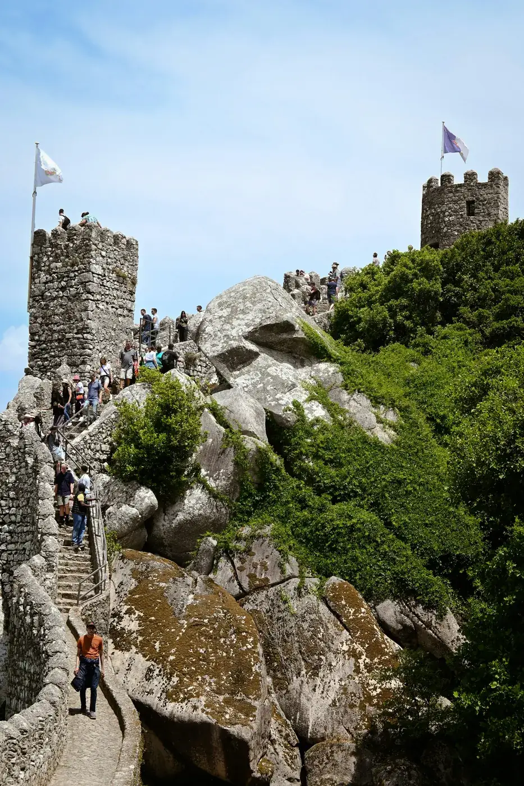

Your group only
Set the pace — no buses, no crowds, no strangers.
Sintra & Lisbon
Local guides, your pace, Lisbon pickup. Pena Palace, the coast, and spots most tourists miss — up to 4 guests.
Up to 4 guests · Lisbon pickup included
Set the pace — no buses, no crowds, no strangers.
Local experts who know the palaces and the quiet corners.
WhatsApp to check dates, confirm details, and go.

Historic Sintra · Pena · Cabo da Roca
Palace tickets extra (~€20/person)
First visit? Sintra, Europe's western edge, and Cascais in one relaxed private day.
Sintra Historic Center · National Palace Area · Castelo dos Mouros Viewpoint · Serra de Sintra · Pena Palace Viewpoint · Cabo da Roca · Cascais

Sintra hills · Hidden coves · Azenhas do Mar
Palace tickets extra (~€20/person)
A shorter coastal route with quiet viewpoints — ideal for families or a slower pace.
Sintra Historic Center · National Palace Area · Castelo dos Mouros Viewpoint · Serra de Sintra · Pena Palace Viewpoint · Praia das Maçãs · Azenhas do Mar · Praia da Aguda
★★★★★ 5.0 on TripAdvisor
"Warm, personal, and full of local insight. Sintra felt special from the first stop."
TripAdvisor
"Clear, friendly, and well-paced — exactly where to go without any stress."
TripAdvisor
"Local knowledge made the difference. We found places we'd never reach alone."
TripAdvisor
"Relaxed private tour with great stories and smart pacing throughout."
TripAdvisor
"Professional and warm. The whole day felt easy and well looked after."
TripAdvisor
"Memorable viewpoints and hidden spots, shown with real care."
TripAdvisor



Lisbon pickup, private guide, and transport for up to 4 guests. Palace entry tickets are not included (~€20/person).
Message us on WhatsApp with your dates. We'll confirm availability, payment, and pickup details. Viator booking also available.
Free cancellation with 24 hours' notice.
From your hotel or accommodation in Lisbon. We confirm the exact time when you book.
Yes. Stops, pace, and timing adapt to your group, weather, and interests.